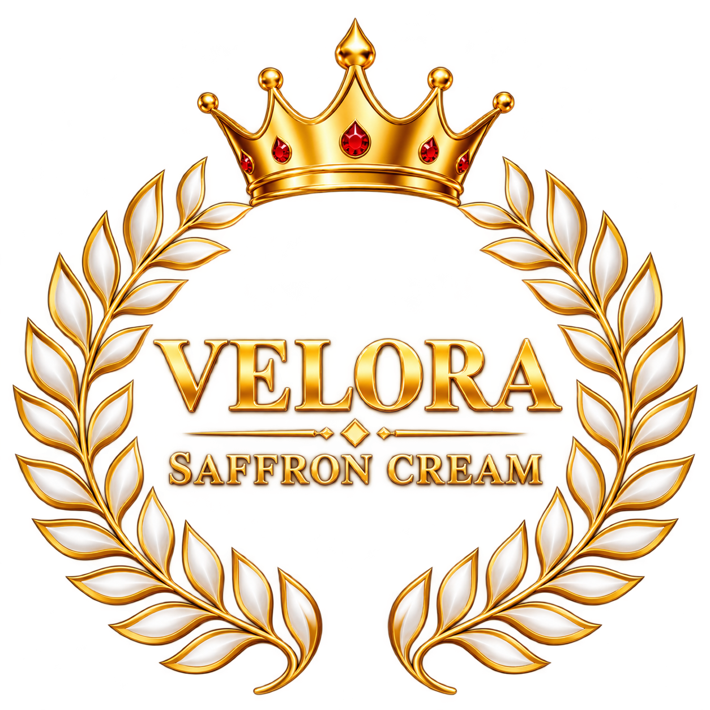
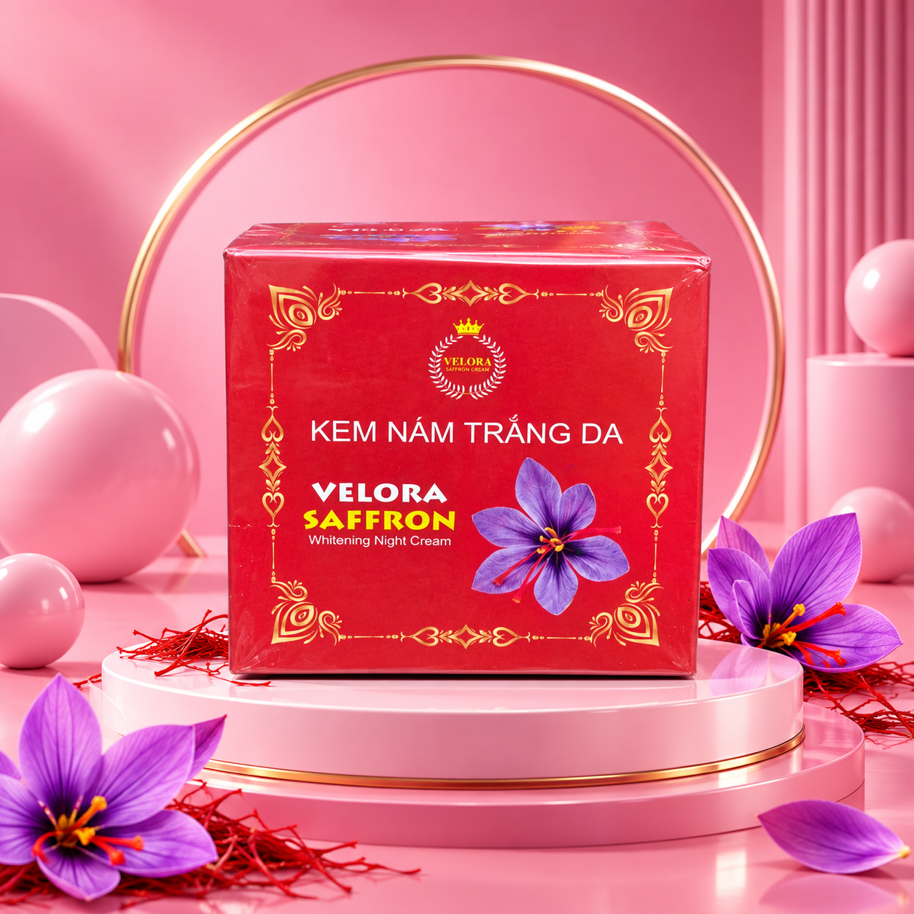
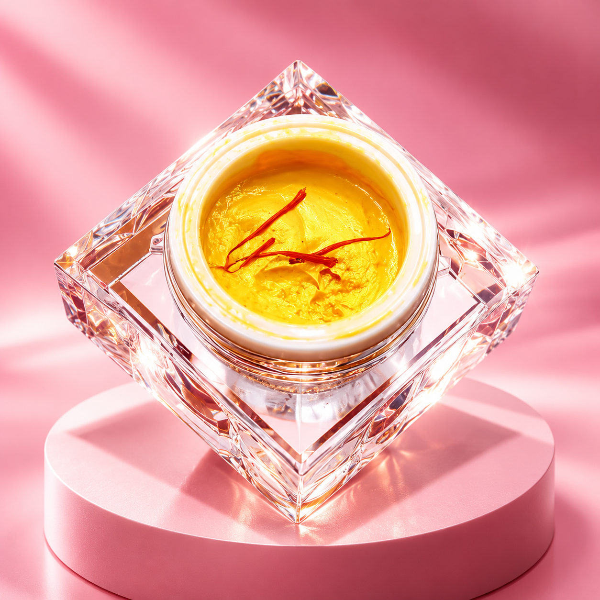
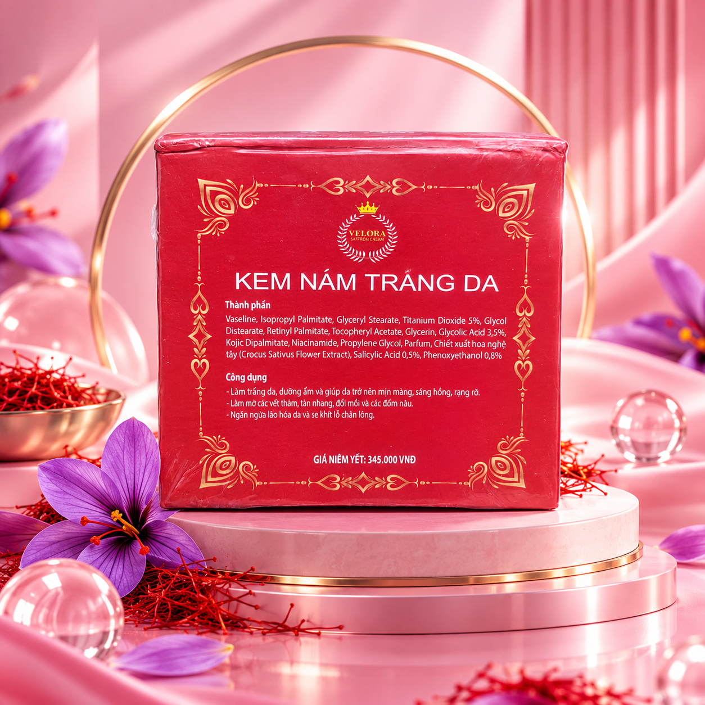
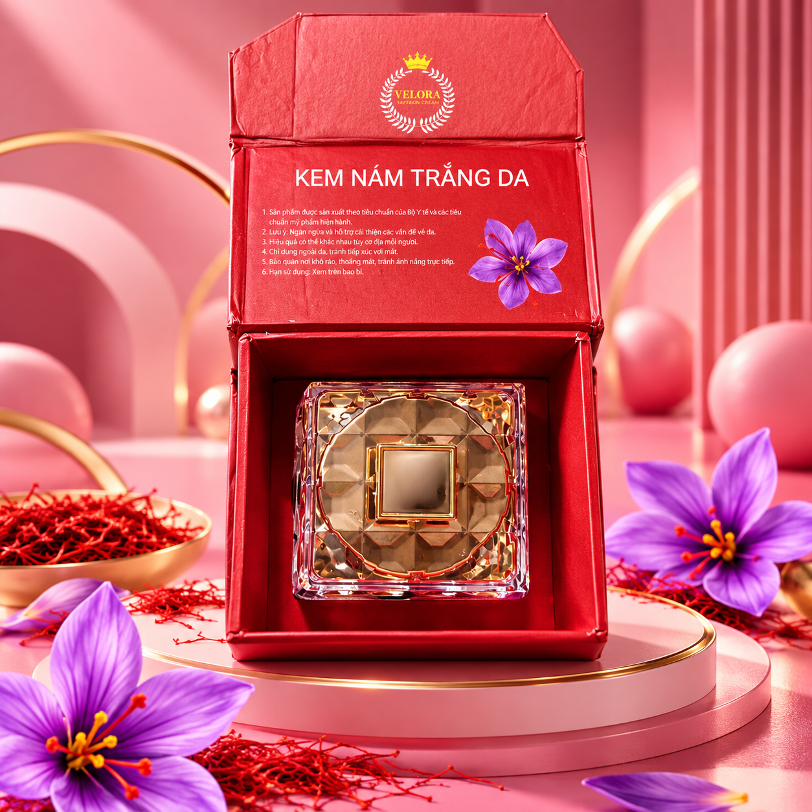

Glycolic Acid
3,5%Một AHA được liệt kê trong công thức.

RITUAL CHĂM SÓC DA BAN ĐÊM
Velora Saffron Whitening Night Cream là kem dưỡng ban đêm với công thức được ghi trên bao bì gồm Saffron Extract, Niacinamide, Kojic Dipalmitate, Glycolic Acid và Salicylic Acid.


VELORA SAFFRON
Velora Saffron được giới thiệu trên bao bì là “Kem Nám Trắng Da” và “Whitening Night Cream”. Thiết kế sản phẩm nổi bật với tông đỏ, vàng và hoa nghệ tây – tạo cảm giác nữ tính, sang trọng và giàu tính nhận diện.
Thông tin dưới đây được đọc và trình bày lại từ mặt sau sản phẩm trong ảnh bạn cung cấp.
Một AHA được liệt kê trong công thức.
Một BHA được liệt kê trong công thức.
Thành phần được ghi trên nhãn sản phẩm.
Được liệt kê trong danh sách thành phần.
Được liệt kê trong danh sách thành phần.
Chiết xuất hoa nghệ tây (Saffron Extract).
Các mô tả dưới đây phản ánh nội dung in trên hộp sản phẩm, không phải đánh giá y khoa độc lập.
Giúp da trở nên mịn màng, sáng hồng, rạng rỡ.
Bao bì ghi công dụng làm mờ vết thâm, tàn nhang, đồi mồi và các đốm màu.
Bao bì ghi công dụng ngăn ngừa lão hóa da và se khít lỗ chân lông.
Bộ ảnh thực tế được sử dụng để giới thiệu hình dáng, bao bì và sản phẩm.


NIGHT RITUAL
Đưa Velora Saffron vào routine buổi tối theo hướng dẫn sử dụng trên nhãn sản phẩm và luôn ưu tiên thử trên vùng da nhỏ trước khi dùng rộng rãi.
VELORA SAFFRON
Liên hệ để được tư vấn thêm về sản phẩm, giá bán và thông tin phân phối.